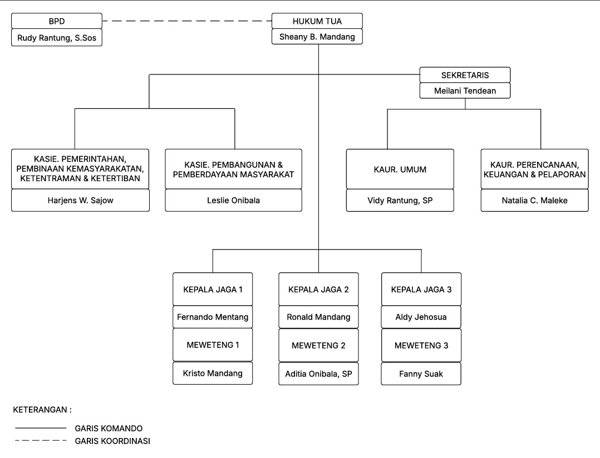

Pemerintahan Desa Tolok
Struktur organisasi dan perangkat desa yang bertugas melayani masyarakat Desa Tolok.
Visi & Misi Desa Tolok
Visi
“Mewujudkan Desa Tolok yang maju, mandiri, sejahtera, dan berbudaya dengan mengedepankan nilai gotong royong serta pelayanan publik yang berkualitas.”
Misi
- Meningkatkan pelayanan pemerintahan desa yang transparan dan akuntabel.
- Mendorong pengembangan potensi lokal melalui sektor pertanian, UMKM, dan pariwisata.
- Meningkatkan kualitas pendidikan dan kesehatan masyarakat desa.
- Menjaga kelestarian lingkungan serta memperkuat nilai sosial dan budaya lokal.
- Meningkatkan partisipasi masyarakat dalam pembangunan desa secara berkelanjutan.
Struktur Organisasi Pemerintahan Desa Tolok
Berikut adalah bagan struktur organisasi pemerintahan Desa Tolok yang menggambarkan hubungan koordinasi dan komando antar perangkat desa.

Perangkat Desa

Sheany B Mandang
Hukum Tua
Melaini Tendean
Sekretaris Desa